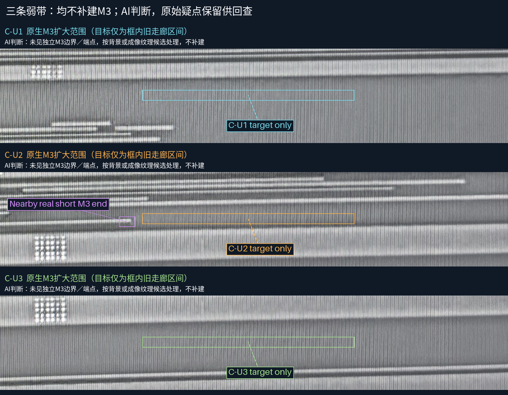
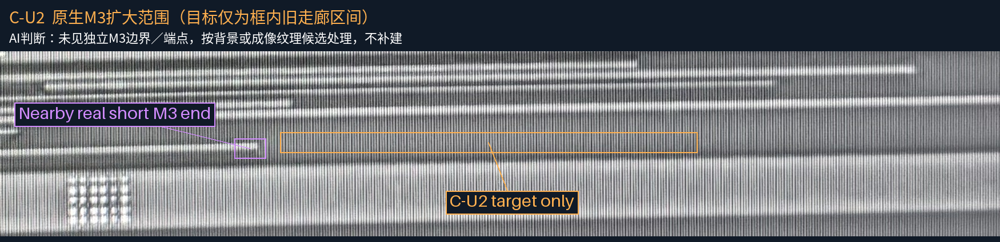
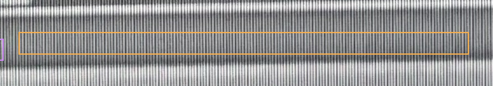
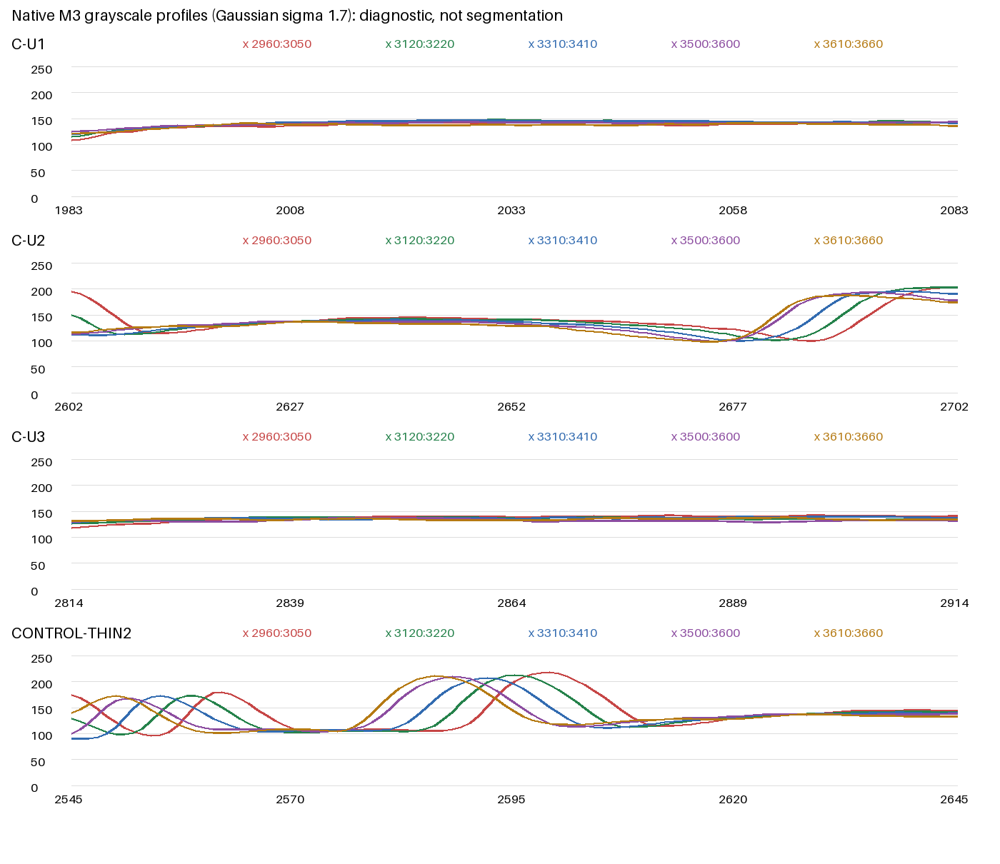

C-U1/C-U2/C-U3：AI均倾向背景／成像纹理，不补建M3。原始疑点保留，这不等于人工确认物理不存在。全部已审几何和N1连接保持。

目标仅为旧走廊内框出的区间，宽图中的相邻线不属于目标。点击图片可看原尺寸。


在五个列区，目标中间灰度约129.5–141，与C-U1的138–146.5、C-U3的132–140接近；清晰细M3对照核心约206–215。C-U2的宽缓相对峰由邻近暗边衬出，没有独立金属的清晰双边界或端点，因此按背景候选处理。灰度范围仅作辅助，不作为通用材料阈值。紫框为左侧另一条真实短M3端部，未延续进目标区。
细M3对照的峰突出且窄。C-U1/U3的起伏较弱；C-U2有较宽且柔和的起伏，但普通背景对照不支持把它单独补成金属。强度与峰宽均不能证明材料身份，也不是金属宽度。

所有裁片来自同一M3原图，没有跨帧投影、几何补线或网络推断。30条金属、5个已审接口与34个设计孔完全保持。